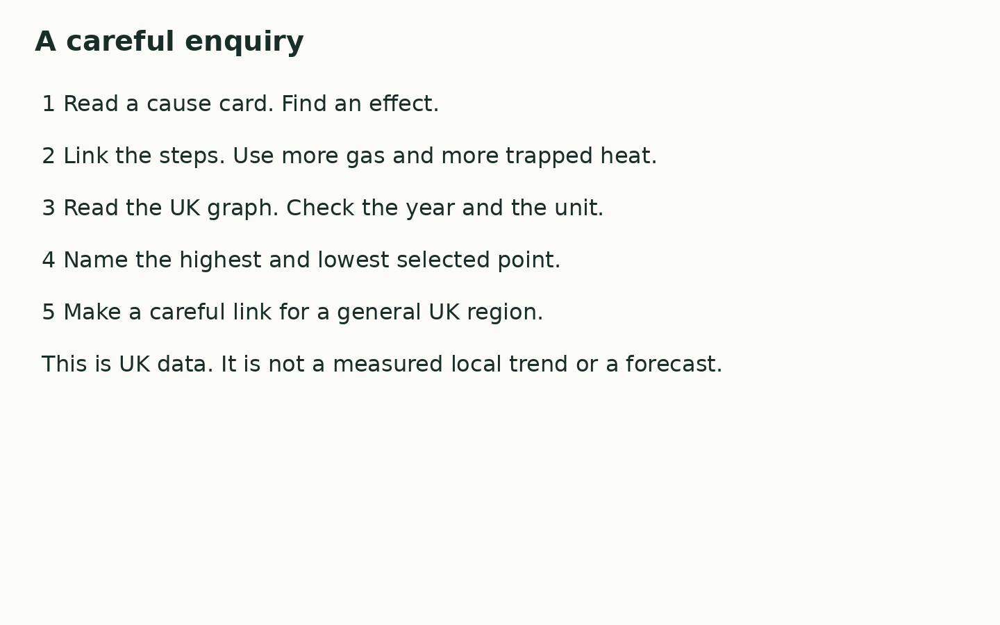

Friday 12 March 2027 | P2 | 40 minutes | Year A
Humanities · GROW · Spring 2 Week 3 · HUM-GROW-S2-W03
You may point, write, type, speak in private or direct a scribe. You may pass. Reading aloud is your choice.
Climate is the usual weather over many years. Human actions add gases that trap more heat. Burning coal, oil and gas adds carbon dioxide to the air. This strengthens the greenhouse effect and warms Earth. This does not mean each year or each place gets warmer in a straight line. We can use climate evidence to check changes over time.
| Card | Fact |
|---|---|
| C1 Burning fuels | Burning coal, oil and gas adds carbon dioxide to the air. |
| C2 Removing forests | Fewer trees can mean less carbon dioxide is taken from the air. Clearing forests can also release stored carbon. |
| C3 Farming and gas | Some farming adds methane to the air. Methane is a greenhouse gas. |
| C4 Warmer conditions | More trapped heat raises Earth's long-term mean temperature. |
| C5 Rising seas | Melting ice on land adds water to the sea. Warm sea water also expands. Sea level can rise. |
| C6 Heat and heavy rain | Warmer conditions can bring more hot spells. Warmer air can hold more water, which can make heavy rain more intense. |

In your book, sort C1 to C6 into causes and effects. Build one cause-to-effect chain with at least three steps. Read the graph to find the highest and lowest selected year. Finish one sentence about what this could mean for a general UK region.
____ adds gas to the air. More heat is trapped, so ____. For our UK region, this can mean ____.
Use the agreed quiet signal for a pause. Stay with the adult in the usual place. Rejoin with one card check. A neutral shape task is ready.